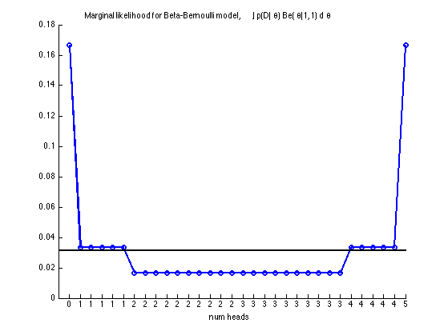
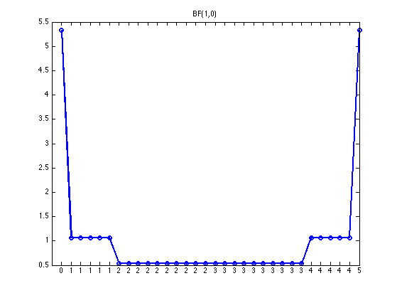
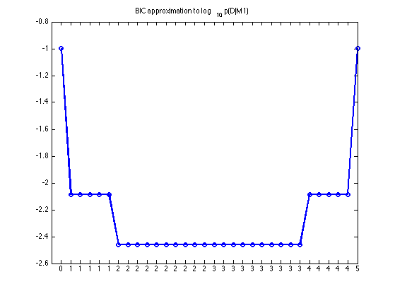
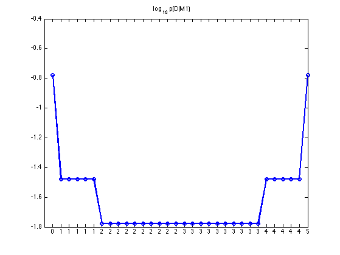

Coins Model Selection Demo
Attempt to determine if a coin is biased or not as we accumulate more and more data, (coin flips).
Contents
% This file is from pmtk3.googlecode.com theta = 0.7; N = 5; alpha = 1; alphaH = alpha; alphaT = alpha; for i=1:(2^N) flips(i,:) = ind2subv(2*ones(1,N), i); % convert i to bit vector Nh(i) = length(find(flips(i,:)==1)); Nt(i) = length(find(flips(i,:)==2)); nh = Nh(i); nt = Nt(i); margLik(i) = exp(betaln(alphaH+nh, alphaT+nt) - betaln(alphaH, alphaT)); mle = Nh(i)/N; loglik(i) = Nh(i)*log10(mle + eps) + Nt(i)*log10(1-mle + eps); logBF(i) = betaln(alphaH+nh, alphaT+nt) - betaln(alphaH, alphaH) - N*log(0.5); end
sort in order of number of heads
[Nh, ndx] = sort(Nh); margLik = margLik(ndx); logBF = logBF(ndx); loglik = loglik(ndx);
figure; hold on p0 = (1/2)^N; h=plot(margLik, 'o-', 'linewidth', 2); h = line([0 2^N], [p0 p0]); set(h,'color','k','linewidth',2); set(gca,'xtick', 1:2^N) set(gca,'xticklabel',Nh) xlabel('num heads') title(sprintf('Marginal likelihood for Beta-Bernoulli model, %s p(D|%s) Be(%s|1,1) d%s', ... '\int', '\theta', '\theta', '\theta')) set(gca, 'xlim', [0, 32]); printPmtkFigure('joshCoins4');
figure; plot(exp(logBF), 'o-', 'linewidth', 2); title('BF(1,0)') set(gca,'xtick', 1:2^N) set(gca,'xticklabel',Nh) set(gca, 'xlim', [0, 32]); printPmtkFigure('joshCoins4BF');
BIC1 = loglik - 1; figure; plot(BIC1, 'o-', 'linewidth', 2); title('BIC approximation to log_{10} p(D|M1)') set(gca,'xtick', 1:2^N) set(gca,'xticklabel',Nh) set(gca, 'xlim', [0, 32]); printPmtkFigure('joshCoins4BIC');
figure; plot(log10(margLik), 'o-', 'linewidth', 2); title('log_{10} p(D|M1)') set(gca,'xtick', 1:2^N) set(gca,'xticklabel',Nh) set(gca, 'xlim', [0, 32]); printPmtkFigure('joshCoins4LML');